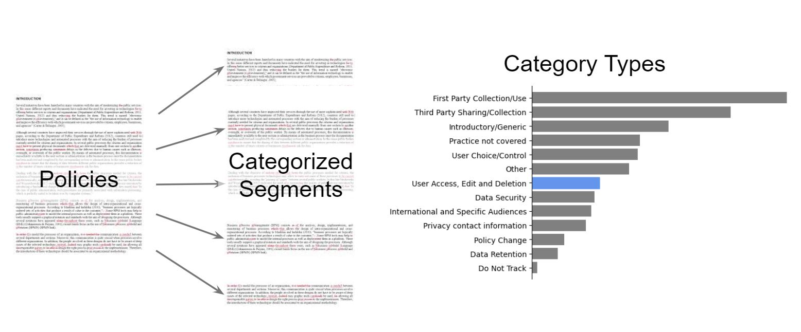
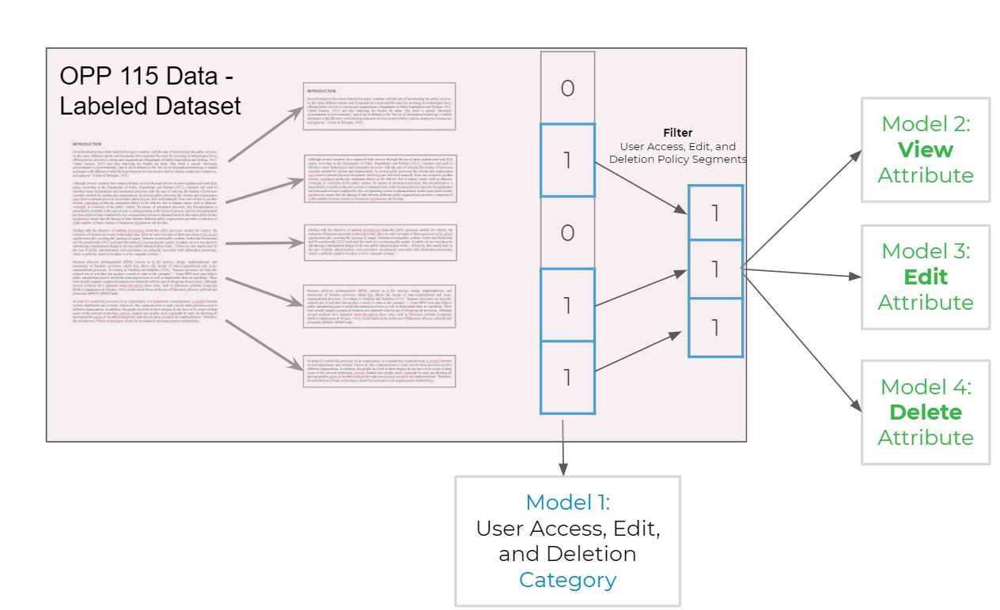
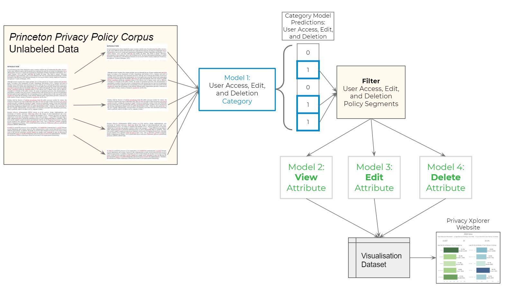
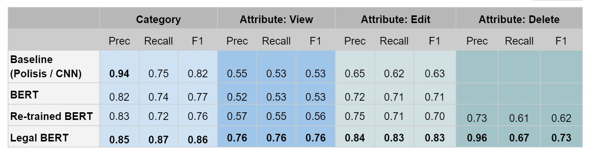
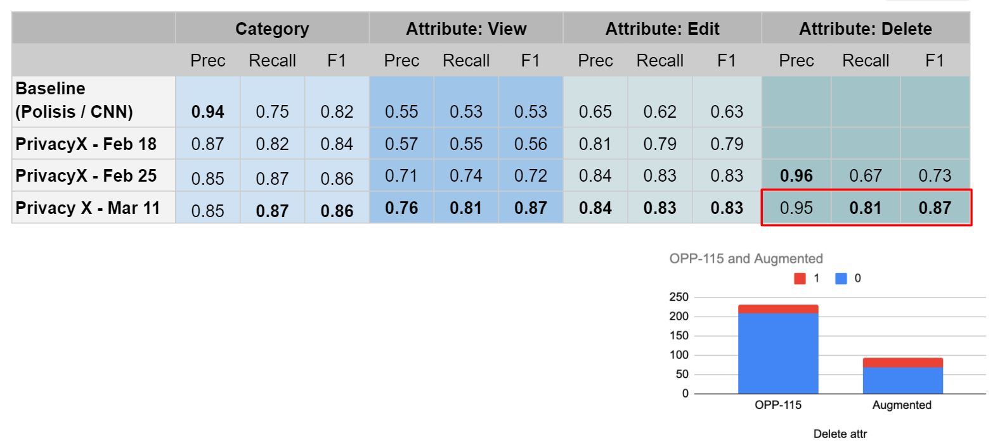
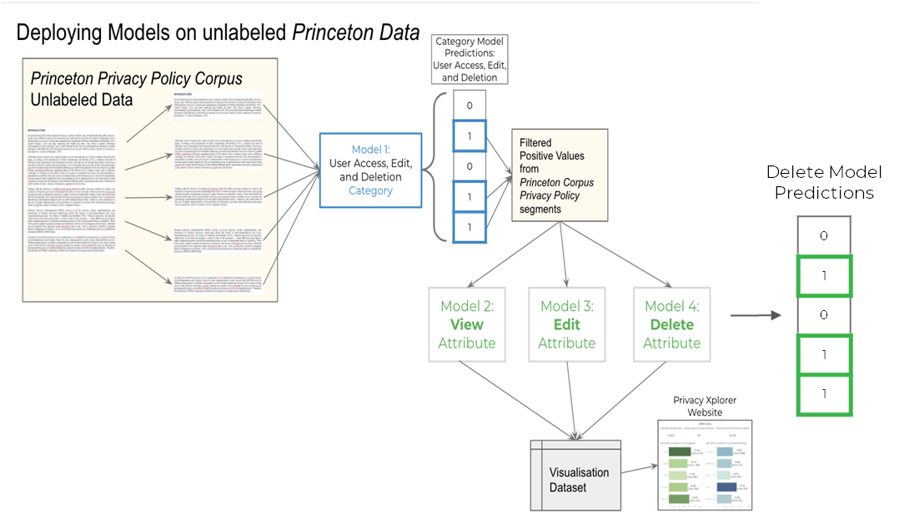
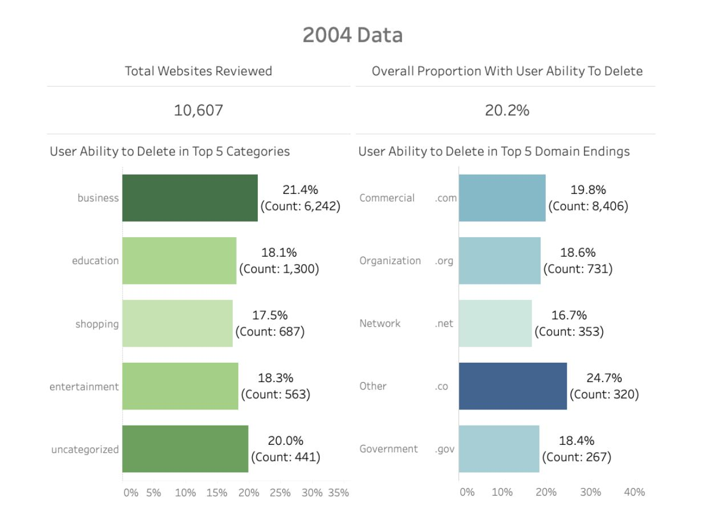
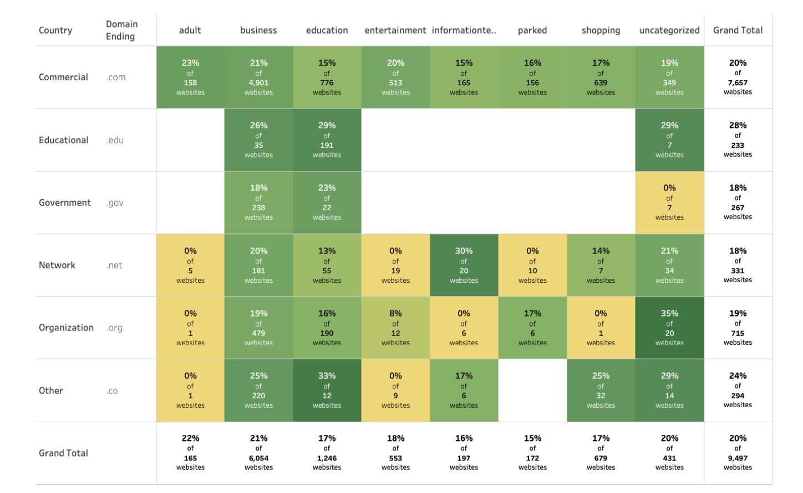

Our goal is to provide regulators and researchers a platform to quickly view and analyze how privacy policies have changed over time.
What we're going to cover
- Privacy policy data
- Model structure, training, fine tuning
- Model results
- Updated, semi-supervised model
- Next steps
- Visuals
A closer look at privacy policy data

2 step classification: Training models on labeled OPP-115 data

Deploying models on unlabeled Princeton Data

LegalBERT outperformed other models

Our models outperform the Polisis baseline

Deploying models on unlabeled Princeton Data (Click to View Steps)

Next steps on modeling:
Scaling our pipeline
- Migrating data to Databricks
Expanding the scope
- Working with our advisors to decide which additional categories/attributes to add.
Visualization
Visualization on actual results

Visualization on actual results

Questions?
What we worked on:
- Alexa: Set up DataBricks enviroment. Reparsed Princeton data.
- Emily: Continued to work on visuals and the website.
- Erin: Completed full model pipeline off of 400k records.
- Stefania: Working on migrating BERT to DataBricks. Manually labeled additional segments for semi-supervised approach. Talked to advisors on additional areas of focus.